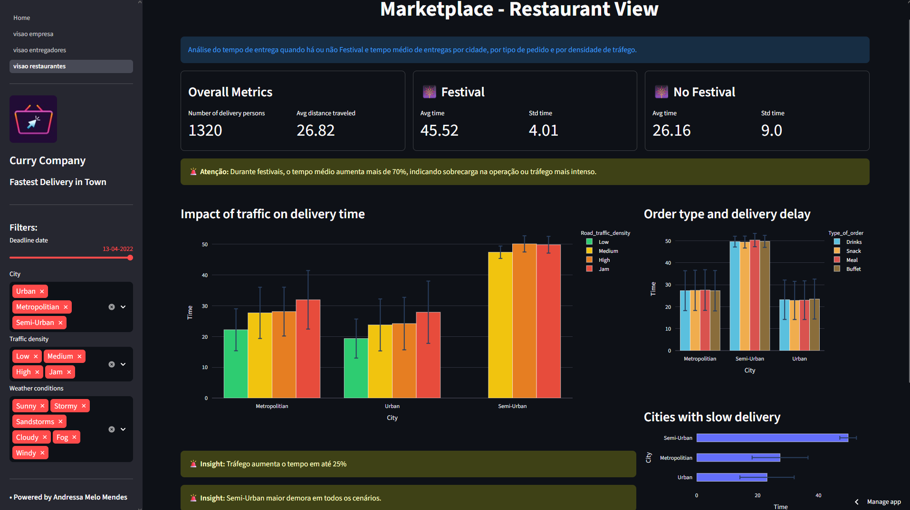

Linguagens de Programação e Banco de Dados
- SQL para extração de dados
- Python com foco em análise de dados
Sou Médica Veterinária Anestesiologista, atualmente cursando Análise e Desenvolvimento de Sistemas (UNISINOS) e a formação de Ciência de Dados (Comunidade DS), onde tenho me dedicado a estudar e aprender tanto de forma teórica quanto na prática sobre as habilidades técnicas necessárias para atuar nesta área.
Tenho um perfil analítico e sempre tive muito interesse em entender como as coisas funcionam e quais elementos e decisões levam aos melhores resultados. Com esses interesses, busco constantemente por conhecimento e experiências para gerar melhores resultados e impacto real.
Estou buscando uma oportunidade de trabalhar profissionalmente como Cientista de Dados para melhorar a tomada de decisão da empresa, através da construção de soluções usando dados.
Construção de soluções de dados para problemas de negócio, próximo dos desafios reais das empresas, utilizando dados públicos de competições de Ciência de Dados, onde eu abordei o problema desde a concepção do desafio de negócio até a publicação do algoritmo treinado em produção, utilizando ferramentas de Cloud Computing.
Análise de sinais clínicos e exames laboratoriais para diagnóstico e definição de tratamento.
Anestesia de cães e gatos, liderança e gerenciamento de equipes.

Nesse projeto, os conceitos de Programação em Python, manipulação de dados, pensamento estratégico e lógica de negócio, junto com ferramentas de desenvolvimetno web como o Streamlit e Github, foram usados para desenvolver um painel gerencial com as principais métricas de uma empresa marketplace de delivery de comida na India.
O resultado final do projeto foi um painel interativo hospedado em um ambiente Cloud e disponibilizado através de um link web. O painel pode ser acessado por qualquer dispositivo conectado na internet.
Sinta-se à vontade para entrar em contato: